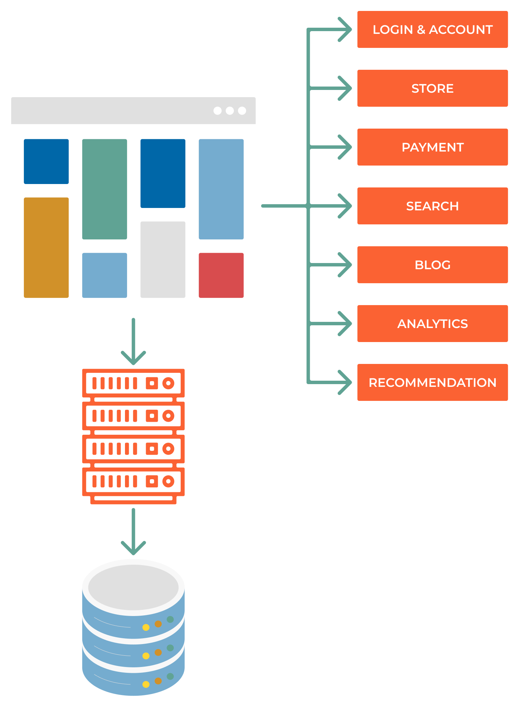

9.00 Abstract
Microservices vs Monolithic Architecture

What is Microservices?
A microservice is a small, autonomous service that works together with other services to form a larger application. Microservices are built around business capabilities and independently deployable by fully automated deployment machinery. There is a bare minimum of centralized management of these services, which may be written in different programming languages and use different data storage technologies.
What is a Monolith?
A monolithic application is built as a single and indivisible unit. Usually, such a monolith is built as a single executable file that contains all the program’s functionality. The monolithic application is self-contained and independent from other computing applications.
Feature vs layer decomposition
Vertical decomposition - each service is responsible for a specific feature end-to-end, from the UI to the database
Horizontal decomposition - each service is responsible for a specific layer of the application, such as the UI, the application logic, or the database
Rewriting everything vs incremental decomposition
Rewrite everything - Stopping development and focusing on rewriting the entire application from scratch. This is done when smaller parts of monolith lack the ability to scale, or when the monolith is too complex to be decomposed:
Decompose the monolith into services
Split the data store
Decentralize all the things
Asynchronous communication
Automate all the things
Incremental decomposition - You’re focusing on new features, while rewriting the monolith piece by piece.
Define the boundaries of the new service
Create a new service
Create a new data store
Integrate it with the monolith
Decommission the old code if needed
TODO
We have this monolithic application, and we want to move to microservices. How do we do it?
{kind=link}
Problems to think about
Christmas is comming and we need to scale up our application
Company decided that they want to outsource marketing to another company
We want to start allowing users to pay in 12 installments and we need to get a banking license, we need to share date with regulators
We want to deliver a mobile application
We want to be able to track user behavior on our website
We wrote everything in PHP and we want to migrate to better languages and frameworks